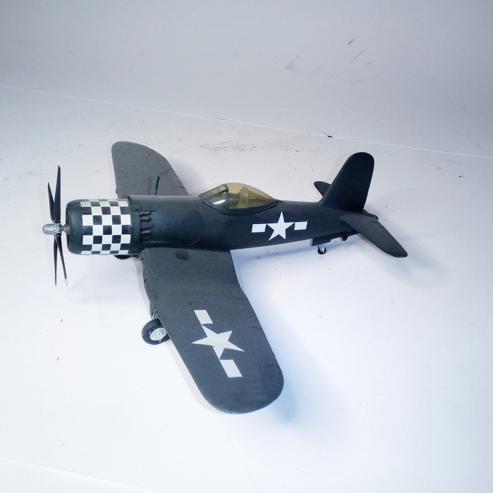

Aerei · scale model archive
Goodyear F2G
Goodyear F2G — Kit: Special Hobby, Scale: 1/72. Bu No 88459 tested at Goodyear and NAS Patuxent River 10/45 6/46 #1/72 #Special Hobby

Photo gallery
English description
Bu No 88459 tested at Goodyear and NAS Patuxent River 10/45 6/46
#1/72 #Special Hobby
Descrizione italiana
Bu No 88459 tested at Goodyear e NAS Patuxent River 10/45 6/46.
#1/72 Hobby.